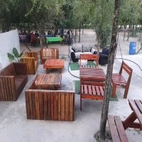
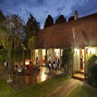

Portfolio
Places we have visited since we started operating
-
MAGADZAVANE
Magadzavane Lodge is situated 16km away from Siteki town on the edge of Lubombo escapement near the global mhlumeni border. A forty bed lodge with furnished en-suite units with tv point restuarent, bar, conference centre and swimming pool. Magadzavane lodge was opened by King Mswati III on the 8th of March 2012 and is located in a natural bush veld environment in Mlawula Nature Reserve.
-
HLANE
Hlane Royal Park is a national park in a ESwatini roughly 67km northwest of Manzini along MR3 road. Hlane is Eswatin's largest protected area where visitors can spot wildlife along the verge of the MR3 road. The camps are alocated in the western sector. This area hosts the traditional Butimba. Nowadays Hlane is managed by Big Game Parks on behalf of the king. Visitors can choose from a selection of game drives and Hlane is wide network of game viewing roads is ideal for a self-drive safari.
-

WENDY'S LODGE
Wendy's Lodge is located on the edge of Lubovane with great sunset view of the Lubovane Dam. The lodge is surrounded by some breathtaking landscapes. It is reachable by car nor any mode of transport, just bisect Siphofaneni town and the cross the big Lusutfu Bridge. It is more of an outsider facility and has a rustic set up dupped with its slogan. Activities offered at Wendy's Lodge include Quad biking, which may be done by individual or groups, swimming pool, Boat Cruise, Horse riding. There are also Wendy's houses and cabins with outside bathrooms and camp houses for meal. Wend's offers a variety of meals.
-
MAGUGA
Maguga Lodge sits near the heart of Hhohho region in Eswatini on the edge of spectacular Maguga Dam. Maguga Lodge is fresh, fun and ideal destination to unwind and recapture that sense of calmness which is often lost. It also offer exclusive leisure and conference facilities which include an outdoor swimming pool.
-

MALOLOTJA
Malolotja Nature Reserve is one of the most impressive parks in southern Africa that was established in 1979. It is also a home of localised reptiles such as Swazi thick gecko. Visitors can stay at the campsite or in self-catering log cabin. It also has manys treats for birders eg qurney's sugarbirds ground woodpecker.
-
MLAWULA
Mlawula Nature Reserve lies to the east of the MR3 north of Simunye and managed by SNTC. It is savannah and woodland mosarc is flanked to the east by the Lubombo moutains and to the north by the Mbuluzi river. This habital ranety means that Mlawula boasts a greater biodiversity than Hlane.
-
MANTENGA
Mangtenga is Eswatini's National trust commission property and one of Eswatini's tpo tourist attraction. It centres upon the pictures que Mantenga falls and incorparates a cultural village, where Swazi history, culture and tradition are bought alive for visitors. The small reserve protects a tract of unspoilt woodland along the Lusushwana river. Visitors can explore a series of short trails that lead to a picnic spot at the falls.
-
MLILWANE
Mlilwane is Eswatini best-known nature reserve. Mlilwane is just 15 minute drive from Ezulwini Valley and its landscape is dominated by Nyonyane mountain. This dramatic peak is known as execution rock taking its name from from grisly fate that once befell the condemned folk who were led to its summit. Mlilwane offers ranety of accommodation from self-catering cottages to beetile huts and a backpeckers lodge. Wildlife that are easy to find are Zebra, blesbok. Other activities include walking trails, mountain biking and horse riding.
-
SUMMERFIELD BOTANICAL GARDEN
Summerfield Botanical Garden is the brainchild of local businessman John Carmichael. It began life as a Botonical Garden with the restuarants and accommodation following by popular demand the 100ha property was landscape from an industrial wasteland and is now a designated national conservancy.